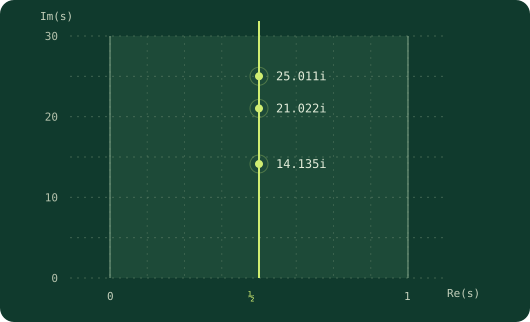

Season 01 · Open course
Riemann
Proof Golf
Find a smaller Lean proof. Play four holes from the Riemann hypothesis. Earn up to 1,000 points per hole.

The course
04 holesGood windows
Use an arbitrarily late good window to contradict the bad windows forced by a hypothetical zero.
104 nodes
0 players ↗
Reflect a zeta zero
Assume right-half-plane nonvanishing for zeta. Deduce Mathlib’s Riemann hypothesis.
2,297 nodes
0 players ↗
The prime-window bound
Deduce RH from the one-sided bound for the centered prime sum on arbitrarily late power windows.
Open record
0 players ↗
The Riemann hypothesis
Prove Mathlib’s RiemannHypothesis from the pinned library under the hosted-runner limits.
Open record
0 players ↗
Leaderboard
0 players · 0 personal bests| Rank | Player | Holes | Points |
|---|---|---|---|
| The first accepted entry opens the standings. Course references earn no player points. | |||